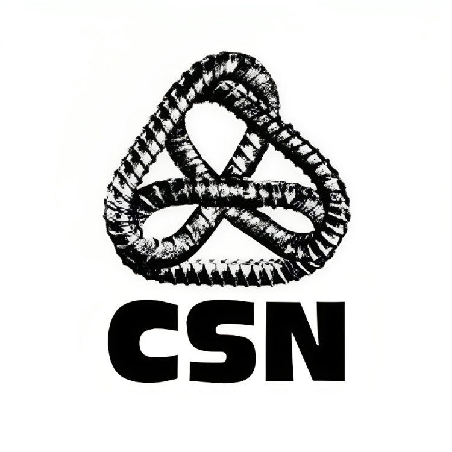

CSN
Au Québec, la CSN représente le plus grand nombre de personnes travaillant pour l’État, ce qui en fait la centrale syndicale la plus importante dans les secteurs public et parapublic. Avec plus de 170 000 travailleuses et travailleurs répartis dans plusieurs centaines de syndicats sur tout le territoire québécois, la CSN est la plus représentative dans les réseaux de la santé et des services sociaux, parmi les enseignantes et les enseignants des cégeps, le personnel de soutien des cégeps et des commissions scolaires, en plus d’être bien présente dans les organismes gouvernementaux.